기계설계기사 (2015-05-31 기출문제)
1과목: 재료역학
1. 그림과 같은 트러스가 점 B에서 그림과 같은 방향으로 5kN의 힘을 받을 때 트러스에 저장되는 탄성에너지는 몇 kJ 인가? (단, 트러스의 단면적은 1.2cm2. 탄성계수는 106Pa 이다.)
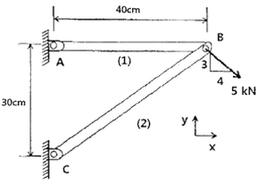
- 52.1
- 106.7
- 159.0
- 267.7
(정답률: 알수없음)

2. 단면이 가로 100mm. 세로 150mm인 사각 단면보가 그림과 같이 하중(P)을 받고 있다. 전단응력에 의한 설계에서 P는 각각 100 kN 씩 작용할 때 안전계수를 2로 설계하였다고 하면, 이 재료의 허용전단응력은 약 몇 MPa인가?
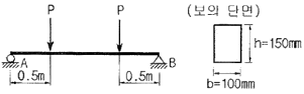
- 10
- 15
- 18
- 20
(정답률: 알수없음)
3. 원형막대의 비틀림을 이용한 토션바(torsion bar) 스프링에서 길이와 지름을 모두 10%씩 증가시킨다면 토션바의 비틀림 스프링상수(비틀림 토크/비틀림 각도)는 몇 배로 되겠는가?
- 1.1-2배
- 1.12배
- 1.13배
- 1.14배
(정답률: 알수없음)
4. 양단이 힌지인 기둥의 길이가 2m이고, 단면이 직사각형(30mm×20mm)인 압축 부재의 좌굴하중을 오일러 공식으로 구하면 몇 kN 인가? (단, 부재의 탄성 계수는 200GPa 이다.)
- 9.9kN
- 11.1kN
- 19.7kN
- 22.2kN
(정답률: 알수없음)
5. 지름 3mm의 철사로 평균지름 75mm의 압축코일 스프링을 만들고 하중 10N에 대하여 3cm의 처짐량을 생기게 하려면 감은 회수(n)는 대략 얼마로 해야 하는가? (단, 전단 탄성계수 G=88GPa 이다.)
- n = 8.9
- n = 8.5
- n = 5.2
- n = 6.3
(정답률: 알수없음)
6. 무게가 각각 300N, 100N 인 물체 A, B가 경사면 위에 놓여있다. 물체 B 와 경사면과는 마찰이 없다고 할 때 미끄러지지 않을 물체 A와 경사면과의 최소 마찰 계수는 얼마인가?
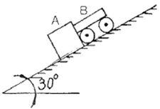
- 0.19
- 0.58
- 0.77
- 0.94
(정답률: 알수없음)
7. 그림과 같이 단순보의 지점 B에 M0의 모멘트가 작용할 때 최대 굽힘 모멘트가 발생되는 A단에서부터 거리 x 는?
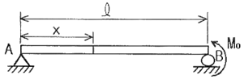
- x = ℓ/5
- x = ℓ
- x = ℓ/2
- x = (3/4)ℓ
(정답률: 알수없음)
8. 바깥지름 50cm, 안지름 40cm의 중공원통에 500kN의 압축하중이 작용했을 때 발생하는 압축응력은 약 몇 MPa인가?
- 5.6
- 7.1
- 8.4
- 10.8
(정답률: 알수없음)
9. 그림과 같은 계단 단면의 중실 원형축의 양단을 고정하고 계단 단면부에 비틀림 모멘트 T가 작용할 경우 지름 D1과 D2의 축에 작용하는 비틀림 모멘트의 비 T1/T2 은? (단, D1=8cm, D2=4cm, ℓ1=40cm, ℓ2=10cm 이다.)
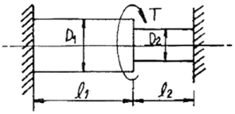
- 2
- 4
- 8
- 16
(정답률: 알수없음)
10. σx=400MPa, σy=300MPa, τxy=200MPa가 작용하는 재료 내에 발생하는 최대 주응력의 크기는?
- 206MPa
- 556MPa
- 350MPa
- 753MPa
(정답률: 알수없음)
11. 길이가 L(m)이고, 일단 고정에 타단 지지인 그림과 같은 보에 자중에 의한 분포하중 w(N/m)가 보의 전체에 가해질 때 점 B에서의 반력의 크기는?
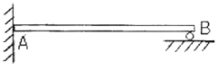
- wL/4
- (3/8)wL
- (5/16)wL
- (7/16)wL
(정답률: 알수없음)
12. 강체로 된 봉 CD가 그림과 같이 같은 단면적과 재료가 같은 케이블 ①, ②와 C점에서 힌지로 지지되어 있다. 힘 P에 의해 케이블 ①에 발생하는 응력(σ)은 어떻게 표현되는가? (단, A는 케이블의 단면적이며 자중은 무시하고, a는 각 지점간의 거리이고 케이블 ①, ②의 길이 ℓ은 같다.)
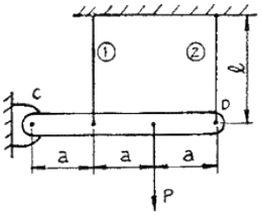
- 2P/3A
- P/3A
- 4P/5A
- P/5A
(정답률: 알수없음)
13. 길이가 2m인 환봉에 인장하중을 가하여 변화된 길이가 0.14cm일 때 변형률은?
- 70 × 10-6
- 700 × 10-6
- 70 × 10-3
- 700 × 10-3
(정답률: 알수없음)
14. 왼쪽이 고정단인 길이 ℓ의 외팔보가 ω의 균일분포하중을 받을 때, 굽힘모멘트 선도(BMD)의 모양은?
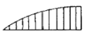
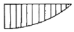
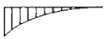
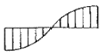
(정답률: 알수없음)
15. 그림과 같은 직사각형 단면의 단순보 AB에 하중이 작용할 때, A단에서 20cm 떨어진 곳의 굽힘 응력은 몇 MPa인가? (단, 보의 폭은 6cm 이고, 높이는 12cm 이다.)
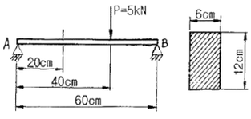
- 2.3
- 1.9
- 3.7
- 2.9
(정답률: 알수없음)
16. 재료가 전단 변형을 일으켰을 때, 이 재료의 단위 체적당 저장된 탄성에너지는? (단, τ는 전단응력, G는 전단 탄성계수이다.)
- τ2 / 2G
- τ / 2G
- τ4 / 2G
- τ2 / 4G
(정답률: 알수없음)
17. 두께 8mm의 강판으로 만든 안지름 40cm의 얇은 원통에 1MPa의 내압이 작용할 때 강판에 발생하는 후프 응력(원주 응력)은 몇 MPa인가?
- 25
- 37.5
- 12.5
- 50
(정답률: 알수없음)
18. 그림과 같은 외팔보가 집중 하중 P를 받고 있을 때, 자유단에서의 처짐 δA는? (단, 보의 굽힘 강성 EI는 일정하고, 자중은 무시한다.)
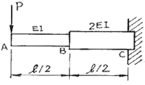
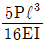
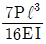
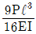
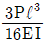
(정답률: 알수없음)
19. 그림과 같은 단면에서 가로방향 중립축에 대한 단면 2차모멘트는?
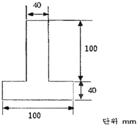
- 10.67 × 106 mm4
- 13.67 × 106 mm4
- 20.67 × 106 mm4
- 23.67 × 106 mm4
(정답률: 알수없음)
20. 그림과 같은 가는 곡선보가 1/4원 형태로 있다. 이 보의 B 단에 Mo의 모멘트를 받을 때, 자유단의 기울기는? (단, 보의 굽힘 강성 EI는 일정하고, 자중은 무시한다.)
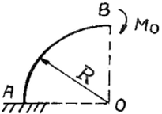
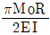
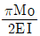
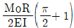
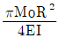
(정답률: 알수없음)
2과목: 기계제작법
21. 스프링(spring)과 같이 반복하중을 받는 기계부품의 가공으로 적합한 것은?
- 버핑(buffing)
- 연삭(grinding)
- 숏 피닝(shot peening)
- 전해 연마(electrolytic polishing)
(정답률: 알수없음)
22. 다음의 단조 양식 중 자유단조에 속하지 않는 것은?
- 굽히기(bending)
- 구멍뚫기(punching)
- 블랭킹(blanking)
- 늘리기(drawing)
(정답률: 알수없음)
23. 다이캐스팅(die casting)의 일반적인 설명 중 틀린 것은?
- 다량생산에 적합하다.
- 치수의 정밀도가 높다.
- 기계 가공여유가 필요하다.
- 복잡한 형상의 주조가 가능하다.
(정답률: 알수없음)
24. 다음 중 탄소강의 열처리에 영향을 가장 적게 주는 요소는?
- 가공시간
- 가열방법
- 가열온도
- 탄소함유량
(정답률: 알수없음)
25. 압출기의 주요 부분이 아닌 것은?
- 램(ram)
- 다이(die)
- 하우징(housing)
- 컨테이너(container)
(정답률: 알수없음)
26. 정밀 입자 가공을 한 공작물의 특징으로 옳은 것은?
- 고 정밀도를 얻을 수 없다.
- 가공면에 내식성과 내 마멸성을 가진다.
- 내 마모성이 증가하나 내식성이 나빠진다.
- 내식성이 증가하나 내 마모성이 나빠진다.
(정답률: 알수없음)
27. 조직을 균일하게 하고 내부응력을 제거하며 재질을 연하게 하는 열처리는?
- 담금질(quenching)
- 뜨임(tempering)
- 풀림(annealing)
- 불림(normalizing)
(정답률: 알수없음)
28. 드로잉(drawing) 가공의 설명 중 틀린 것은?
- 펀치의 최소 곡률 반지름은 펀치의 지름보다 1/3 작게 한다.
- 다이의 모서리 둥글기 반지름이 크면 주름이 쉽게 나타나지 않는다.
- 펀치와 다이 사이의 간격은 재료 두께와 다이 벽과의 마찰을 피하기 위한 것이다.
- 드로잉 작업이 진행되는 동안 소재 누름판으로 다이 상면에 접하고 있는 소재를 눌러 주어야 한다.
(정답률: 알수없음)
29. 2차원 절삭모델에서 절삭깊이를 t1, 칩 두께를 t2 라고 할 때 절삭비 γc 는?
- γc = t1×t2
- γc = 2(t1×t2)
- γc = t2/t1
- γc = t1/t2
(정답률: 알수없음)
30. 전해연마(Electrolytic polishing)의 단점에 해당되는 것은?
- 가공면에는 방향성이 있다.
- 내마멸성, 내부식성이 저하된다.
- 연마량이 적으므로 깊은 홈이 제거되지 않는다.
- 복잡한 형상의 공작물, 선, 박편(箔片) 등의 연삭은 불가능하다.
(정답률: 알수없음)
31. 프레스 전단가공에서 두께 5mm 인 SM40C 강판에 지름 50mm의 구멍을 펀칭할 때 최대 전단력은 약 얼마인가? (단, 전단강도 τ=45kg/mm2 이다.)
- 10831kg
- 17663kg
- 35343kg
- 70686kg
(정답률: 알수없음)
32. NC 서보기구(servo system)의 형식은 피드백장치의 유무와 검출위치에 따라 분류되는데 그 형식이 아닌 것은?
- 개방 회로 방식
- 폐쇄 회로 방식
- 반개방 회로 방식
- 반폐쇄 회로 방식
(정답률: 알수없음)
33. 미터나사를 3침법으로 유효지름을 측정하려고 할 때 산출방법으로 옳은 것은? (단, E: 유효지름, M: 3침 삽입 후 바깥지름, d: 3침의 지름, P: 피치이다.)
- E=M+3d+0.86603×P
- E=M-3d+0.86603×P
- E=M+3d+0.96049xP
- E=M-3d+0.96049xP
(정답률: 알수없음)
34. 상하의 형에 문자나 무늬의 요철을 붙이고, 이 사이에 소재를 놓고 압축하여 문자나 무늬를 생성하는 가공 방법은?
- 압인 가공(coining)
- 압출 가공(extruding)
- 블랭킹 가공(blanking)
- 업세팅 가공(up setting)
(정답률: 알수없음)
35. 공작기계의 구비조건으로 틀린 것은?
- 가공능력이 클 것
- 내구력이 적을 것
- 높은 정밀도를 가질 것
- 고장이 적고 효율이 좋을 것
(정답률: 알수없음)
36. 열처리의 종류에 해당되지 않는 것은?
- 오스템퍼링(austempering)
- 스웨이징(swaging)
- 마템퍼링 (martempering)
- 노멀라이징(normalizing)
(정답률: 알수없음)
37. 주형은 주탕 시 주형에서 발생하는 가스, 쇳물에서 나오는 가스, 주형 공동부에 있었던 공기 등이 빠져 나올 수 있어야 기공의 발생을 방지할 수 있다. 이를 만족하기 위한 주물사의 통기도 계산식으로 옳은 것은? (단, K: 주물사의 통기도, V: 통과 공기량, h: 시편의 높이, P: 공기압력, A: 시편의 단면적, t: 통과시간이다.)
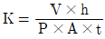
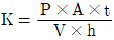
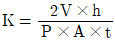
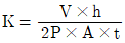
(정답률: 알수없음)
38. 밀링머신에서 커터의 지름이 150mm이고, 한 날당 이송이 0.2mm, 커터의 날수를 8개, 회전수를 2000rpm으로 할 때 절삭속도는 약 얼마인가?
- 922.48m/min
- 942.48m/min
- 962.48m/min
- 982.48m/min
(정답률: 알수없음)
39. 드릴부시(drill bushing)에서 일반부시로는 공구안내를 할 수 없을 경우 사용되며 테이퍼핀을 이용하여 부착시키는 것은?
- 삽입 부시
- 템플릿 부시
- 기름홈 부시
- 브래킷 부시
(정답률: 알수없음)
40. 가스용접에서 사용하는 가스의 종류 중 조연성 가스에 해당하는 것은?
- 산소
- 수소
- 프로판
- 아세틸렌
(정답률: 알수없음)
3과목: 기계설계 및 기계재료
41. 벨트 전동에서 유효장력 P를 나타내는 식으로 옳은 것은? (단, Tt는 긴장측 장력이고, Ts는 이완측 장력을 나타낸다.)
- P=(Tt-Ts)/2
- P=Ts/Tt
- P=TsㆍTt
- P=Tt-Ts
(정답률: 알수없음)
42. 다음 중 미끄럼 베어링 재료의 요구조건으로 틀린 것은?
- 열전도율이 낮을 것
- 내 부식성이 강할 것
- 유막의 형성이 용이할 것
- 주조와 다듬질 등의 공작이 용이할 것
(정답률: 알수없음)
43. 지름이 d인 중실축이 비틀림 모멘트 T만을 받았을 때 생기는 최대전단응력을 τ1라 하면, 이 축에 비틀림 모멘트 T와 굽힘 모멘트 M(M=3T)을 동시에 작용시켰을 때, 생기는 최대전단응력은 τ1의 및 배가 되는가?
- √3배
- 2배
- √10배
- 5배
(정답률: 알수없음)
44. 리벳작업 중 보일러 및 압력용기 등에서 기밀을 유지하기 위하여 하는 작업은?
- 구멍뚫기
- 다듬질
- 펀칭
- 코킹
(정답률: 알수없음)
45. 사각나사에서 리드각 3.00°, 마찰계수 μ=0.2 일 때, 이 나사의 효율을 구하면?
- 20.55%
- 25.55%
- 30.55%
- 35.55%
(정답률: 알수없음)
46. 브레이크 드럼의 지름은 500mm, 허용브레이크의 압력은 0.9MPa, 브레이크 용량은 1MPa·m/s이고, 접촉부 마찰계수는 0.25인 주철제 브레이크가 있다. 이 브레이크를 허용브레이크 압력으로 브레이크 용량까지 사용할 경우 드럼의 회전수는 약 몇 rpm인가?
- 148
- 170
- 198
- 210
(정답률: 알수없음)
47. 비틀림 각이 30°인 표준 헬리컬 기어에서 피치원 지름이 160mm, 이직각 모듈이 4일 때, 이 기어의 바깥지름은 몇 mm인가?
- 156
- 168
- 172
- 178
(정답률: 알수없음)
48. 코터이음에서 20kN의 인장력이 작용하고 있을 때, 코터가 받는 전단응력은 약 몇 MPa인가? (단, 코터의 폭은 100mm, 두께는 50mm이다.)
- 1
- 2
- 10
- 20
(정답률: 알수없음)
49. 증기, 가스 등의 유체가 제한된 최고 압력을 초과했을 때, 자동적으로 밸브가 열려서 유체를 외부로 배출하며 배출이 끝난 후에는 압력이 정확하게 유지되고 제한 압력보다 너무 내려가지 않아야 하는 것은?
- 릴리프 밸브(relief valve)
- 정지 밸브(stop valve)
- 첵 밸브(check valve)
- 나비형 밸브(butterfly valve)
(정답률: 알수없음)
50. 겹판 스프링의 일반적인 특징에 관한 설명으로 틀린 것은?
- 판 사이의 마찰에 의해 진동을 감쇠한다.
- 내구성이 좋고, 유지보수가 용이하다.
- 트럭 및 철도차량의 현가장치로 이용된다.
- 판 사이의 마찰작용에 의해 특히 미소진동의 흡수에 유리하다.
(정답률: 알수없음)
51. 탄소강에 함유되어 있는 원소 중 많이 함유되면 적열 취성의 원인이 되는 것은?
- 인
- 규소
- 구리
- 황
(정답률: 알수없음)
52. 철강재료의 열처리에서 많이 이용되는 S곡선이란 어떤 것을 의미하는가?
- T.T.L 곡선
- S.C.C 곡선
- T.T.T 곡선
- S.T.S 곡선
(정답률: 알수없음)
53. 배빗메탈 이라고도 하는 베어링용 합금인 화이트 메탈의 주요성분으로 옳은 것은?
- Pb-W-Sn
- Fe-Sn-Cu
- Sn-Sb-Cu
- Zn-Sn-Cr
(정답률: 알수없음)
54. 고속도강의 특징을 설명한 것 중 틀린 것은?
- 열처리에 의하여 경화하는 성질이 있다.
- 내마모성이 크다.
- 마텐자이트(martensite)가 안정되어, 600°C 까지는 고속으로 절삭이 가능하다.
- 고Mn강, 칠드주철, 경질유리 등의 절삭에 적합하다.
(정답률: 알수없음)
55. 쾌삭강(Free cutting steel)에 절삭속도를 크게 하기 위하여 첨가하는 주된 원소는?
- Ni
- Mn
- W
- S
(정답률: 알수없음)
56. 오일리스 베어링과 관계가 없는 것은?
- 구리와 납의 합금이다.
- 기름보급이 곤란한 곳에 적당하다.
- 너무 큰 하중이나 고속회전부에는 부적당하다.
- 구리, 주석, 흑연의 분말을 혼합 성형한 것이다.
(정답률: 알수없음)
57. 탄소강을 경화 열처리 할 때 균열을 일으키지 않게 하는 가장 안전한 방법은?
- Ms점까지는 급냉하고 Ms. Mf사이는 서냉한다.
- Mf점 이하까지 급냉한 후 저온도로 뜨임한다.
- Ms점까지 서냉하여 내외부가 동일온도가 된 후 급냉한다.
- Ms. Mf 사이의 온도까지 서냉한 후 급냉한다.
(정답률: 알수없음)
58. 충격에는 약하나 압축강도는 크므로 공작기계의 베드, 프레임, 기계 구조물의 몸체 등에 가장 적합한 재질은?
- 합금공구강
- 탄소강
- 고속도강
- 주철
(정답률: 알수없음)
59. 특수강인 Elinvar의 성질은 어느 것인가?
- 열팽창계수가 크다.
- 온도에 따른 탄성률의 변화가 적다.
- 소결합금이다.
- 전기전도도가 아주 좋다.
(정답률: 알수없음)
60. 백주철을 열처리로에서 가열한 후 탈탄시켜, 인성을 증가시킨 주철은?
- 가단주철
- 회주철
- 보통주철
- 구상흑연주철
(정답률: 알수없음)
4과목: 기구학 및 CAD
61. 베지어(Bezier) 곡선과 B-Spline 곡선이 가지는 공통적인 성질이 아닌 것은?
- 조정점(control point)을 가진다.
- 곡선은 볼록포체(convex hull) 내에 포함된다.
- 국부적 조정(local modification)이 가능하다.
- 조정점을 근사하는 곡선이다.
(정답률: 알수없음)
62. 다음의 2차원 동차 변환 행렬(homogeneous transformation matrix)이 뜻하는 것은?
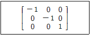
- 원점에 대한 시계방향 90°회전
- 원점에 대한 반시계방향 90°회전
- 원점에 대한 확대 변환
- 원점에 대한 반사 변환
(정답률: 알수없음)
63. 솔리드 모델(solid model)의 입력방법에 대한 설명 중 틀린 것은?
- 불리언 작업(Boolean operations)은 기본입체를 덧붙이거나 빼면서 원하는 솔리드를 만드는 방법이다.
- 리프팅(lifting)은 미리 정해진 연속된 단면을 덮는 표면곡면을 생성시켜 솔리드를 생성하는 방법이다.
- 라운딩(rounding)은 만들어진 모델을 수정하는 기능의 하나로 모서리나 꼭지점에서 기존면에 법선 벡터가 연속되는 부드러운 곡면을 생성할 때 이용된다.
- 경계모델링(boundary modeling)은 입체의 형성 요소인 꼭지점, 모서리, 면 등을 생성, 삭제, 수정하면서 모델링을 수행하는 방법이다.
(정답률: 알수없음)
64. 래스터 그래픽 (raster display) 장치에서 24-bit plane(빨강, 초록, 파랑을 각각의 색깔에 8 bit-plane씩을 사용)을 사용한다면 한 화면에 동시에 사용할 수 있는 전체 색깔 수는?
- 23
- 28
- 212
- 224
(정답률: 알수없음)
65. 다음 중 매개변수 곡면에 사용되는 아이소파라메트릭(isoparametric) 곡선의 성질로 가장 거리가 먼 것은?
- 곡면의 굴곡을 시각적으로 나타날 때 자주 사용될 수 있다.
- 곡면정의에 사용되는 두 개의 매개변수 중 한 개의 매개변수 값을 고정시켜 생성된 곡선이다.
- 이웃한 아이소파라메트릭 곡선끼리의 거리는 항상 일정하다.
- 지구본의 경도선과 위도선이 한 예이다.
(정답률: 알수없음)
66. 솔리드 모델의 자료구조 중 CSG 트리구조에 관한 설명으로 틀린 것은?
- 솔리드 모델이 불리안 작업에 의해 모델링된 과정을 저장하는 구조이다.
- CSG 표현은 항상 대응되는 B-rep 모델로 치환 가능하다.
- CSG 트리구조는 리프팅이나 라운딩과 같은 국부 변형기능들을 구현하기 힘들다.
- 물체의 경계면, 경계 모서리, 그리고 이들 간의 연결 관계 등을 쉽게 유도해 낼 수 있다.
(정답률: 알수없음)
67. 경계표현법(B-rep)으로 만들어진 단순다면체 솔리드 모델을 검증하기 위한 오일러 공식은? (단, F:면의 수, E:모서리의 수, V:꼭지점의 수)
- F-E+V=2
- F-E+2V=2
- F-E+V=3
- F-E+2V=3
(정답률: 알수없음)
68. 상이한 CAD 시스템간의 형상 데이터 교환을 위한 중립 파일의 형식(neutral file format)이 아닌 것은?
- IGES(Initial Graphics Exchange Specification)
- STEP(STandard for the Exchange of Product model data)
- DXF(Drawing eXchange Format)
- GIF(Graphics Interchange Format)
(정답률: 알수없음)
69. CSG(Constructive Solid Geometry) 모델에서 Primitive란 기본 형상을 의미하며 이들은 불리안 연산이 가능하다. 다음 중 CSG의 Primitive로 보기 어려운 것은?
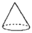
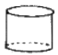
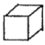
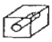
(정답률: 알수없음)
70. 3차원 물체의 기하학적 변환은 일반적으로 4X4 변환 행렬로 다음과 같이 정의될 때, x축에 대해 회전 할 경우 관계되는 것은?
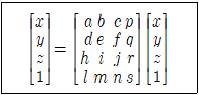
- a, b, d, e
- e, f, i, j
- a, d, h, l
- p, q, r, s
(정답률: 알수없음)
71. 등가속도 운동을 하는 캠 변위선도가 포물선인 경우 속도선도와 가속도선도의 함수식은 어떤 형태인가?
- 속도선도는 1차식, 가속도 선도는 상수
- 속도선도는 2차식, 가속도 선도는 1차식
- 속도선도는 1차식, 가속도 선도는 1차식
- 속도선도는 1차식, 가속도 선도는 2차식
(정답률: 알수없음)
72. 기구를 구성하는 링크(link)운동에서 링크의 형상과는 관계없이 물체 상호간의 조합 상태만을 도시하는 스켈리톤(skeleton)표시법의 기호와 설명이 틀린 것은?
- ○ : 회전대우
- □ : 미끄럼대우
- △ : 점선대우
- ◇ : 그라운드마크
(정답률: 알수없음)
73. 기어 인벌류트 처형에서 압력각이 커졌을 때에 생기는 현상이 아닌 것은?
- 물림률이 증대된다.
- 이의 강도가 커진다.
- 언더컷을 방지할 수 있다.
- 잇면의 미끄럼률이 작아진다.
(정답률: 알수없음)
74. 선풍기의 날개나 벨트 풀리의 움직임은 기계운동의 종류 중에서 어느 운동이라 할 수 있는가?
- 회전 운동
- 구면 운동
- 나선 운동
- 가속도 운동
(정답률: 알수없음)
75. 사일런트 체인을 사용하는 주목적으로 가장 적합한 것은?
- 보다 정숙한 운전
- 큰 동력전달
- 자유로운 변속
- 체인 핀 마모방지
(정답률: 알수없음)
76. 4링크 기구에서 고정 링크에 연결되어 있는 두 개의 링크가 왕복운동을 할 수 있는 것은?
- 이중 레버 기구
- 고정 링크 기구
- 레버 크랭크 기구
- 회전 슬라이더 기구
(정답률: 알수없음)
77. 기어의 잇수 Z1=20개, Z2=30개, 모듈 m=3인 한 쌍의 스퍼 기어의 중심거리를 구하면 몇 mm인가?
- 90
- 45
- 75
- 1⑤
(정답률: 알수없음)
78. 엇걸기 벨트 전동에서 속도비가 4일 때 양쪽 풀리의 접촉각 θ1과 θ2 사이의 관계는? (단, 접촉각 θ1:원동풀리, θ2:종동풀리 이다.)
- θ1=(1/2)θ2
- θ1=θ2
- θ1=2θ2
- θ1=3θ2
(정답률: 알수없음)
79. 다음 그림에서 길이 60mm의 기소
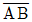
가 점 A를 중심으로 회전할 때, 기소의 각속도 ω=10rad/s 이라면 점 B의 속도 VB는 몇 m/s인가?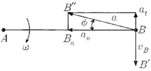
- 0.3
- 0.6
- 3
- 6
(정답률: 알수없음)
80. 마찰차의 적용에 대한 설명 중 틀린 것은?
- 무단 변속이 필요한 경우
- 동력 전달력이 크지 않을 경우
- 각 속도비를 중요시 하지 않을 경우
- 비교적 저속회전으로 정숙한 운전이 요구될 경우
(정답률: 알수없음)
점 B에서의 힘은 트러스의 중심축을 따라 작용하므로, 트러스의 길이 방향으로 변형이 일어나게 된다. 이 때 변형량은 F*L/AE 로 구할 수 있다. 여기서 F는 힘, L은 트러스의 길이, A는 단면적, E는 탄성계수를 나타낸다.
변형량을 구하면 x = 5*10^3*3/(1.2*10^-4*10^6) = 12.5mm 이다.
따라서 저장되는 탄성에너지는 1/2*10^6*(12.5*10^-3)^2*1.2*10^-4 = 0.159J = 159.0mJ 이다.
따라서 정답은 "159.0" 이다.